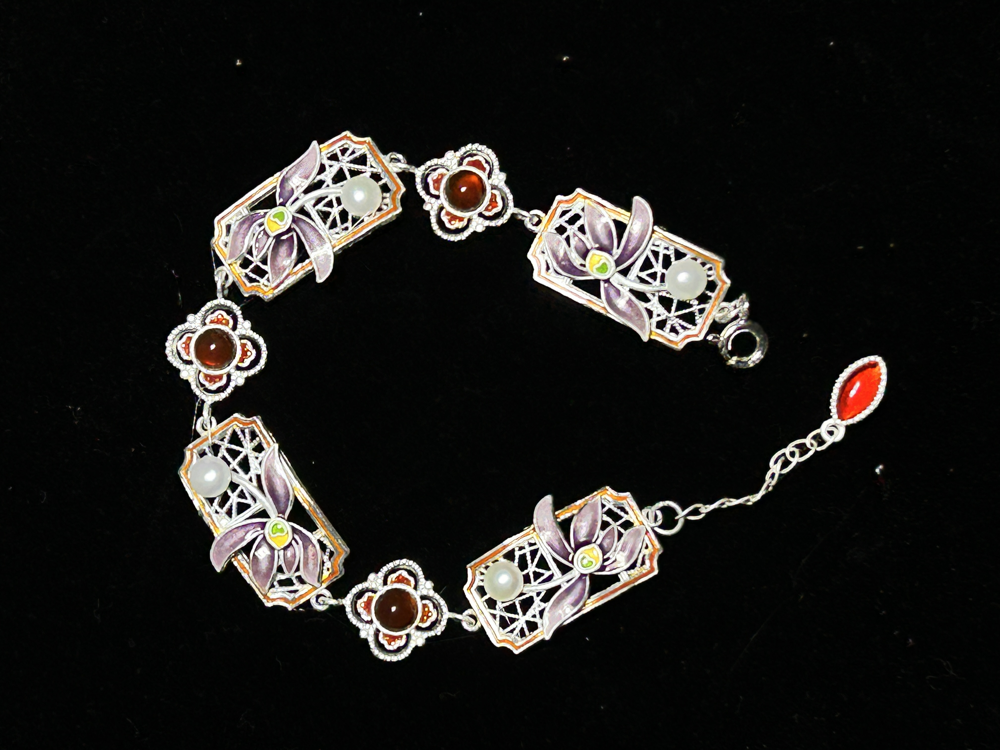

鸢 尾
Symbolise: wisdom, hope, and the courage to bloom in adversity
The iris unfolds its petals like stained glass catching light — each translucent layer a meditation on resilience and grace. In ancient courts, it was the messenger's flower, carrying words across impossible distances. We capture this luminous spirit in plique-à-jour enamel, where light passes through color as it does through the petal itself.

Inspiration
"Like light through cathedral glass, each petal holds a thousand years of whispered prayers and silent grace."
如教堂彩窗透出的光， 每一片花瓣都承载着千年的低语与静谧。
YÀN Atelier · 滇韵珐琅